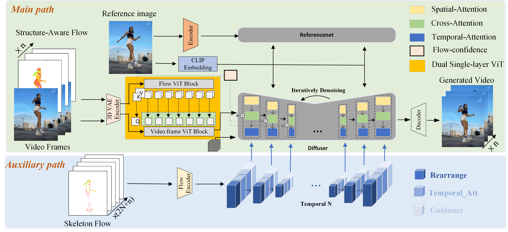

Abstract
Despite impressive advancements in human motion transfer based on diffusion models, existing methods still struggle to generate temporally consistent and realistic human motion, often exhibiting motion discontinuities, appearance (or identity)-motion conflicts, and visual artifacts such as phantom limbs. These issues largely stem from inaccurate 2D pose or 3D SMPL mesh estimation and the lack of explicit motion modeling to capture coherent temporal dependencies across frames. To address these challenges, we introduce CoMotion, flow-driven dual-path diffusion models designed for Consistent human Motion transfer. Specifically, it consists of three units: (1) Dual-Path Motion Coordination integrates global motion priors from an auxiliary temporal branch into the main path. The main path captures fine-grained local motion via interleaved video-flow embeddings, while the auxiliary path encodes long-range temporal dependencies through external temporal blocks, ensuring globally coherent motion. (2) Structure-Aware Flow mechanism embeds 3D structural priors into 2D optical flow, guided by surface normal and Euler continuity constraints, enabling geometrically consistent and perceptually stable motion synthesis with respect to underlying 3D geometry. (3) Dual single-layer ViT module mitigates motion-appearance discrepancies. Extensive experiments demonstrate that CoMotion significantly improves the continuity of local body motion and global human motion as well as the generation quality, achieving competitive performance on benchmark datasets.
Overview
Reference Image
Driving Video
CoMotion Output
Given a reference image and driving video, CoMotion faithfully transfers the motion from the driving video to the reference person while preserving identity and ensuring temporal consistency.
Video Demo
📌 Demo 1: CoMotion Motion Transfer
🎭 Demo 2: Motion Transfer Result
✨ Demo 3: Another Transfer Example
🌟 Ours: Main Result
👋 回头打招呼
🔄 转身再转回来
😊 半身微笑打招呼
💃 扭动
🏮 水里古典舞
🌾 抚摸麦尖儿转身
🎶 舞蹈 Demo 1
🎶 舞蹈 Demo 2
👤 背影双手放下
📹 UBC Demo 1
📹 UBC Demo 6
📊 Additional Result
Method Overview

Given reference image and driving video, our method extracts both the Structure-Aware Flow and the Skeleton Flow as motion. Structure-Aware Flow sequences ORGB ∈ ℝH × W × 3 are interleaved with the corresponding video frames I ∈ ℝH × W × 3 to form pseudo-continuous sequence which denoted as X = [I1, ORGB1, I2, ORGB2, ..., In, ORGBn] in the main path. After encoding, dual single-layer ViT module aligns and fuses motion and appearance features. The preprocessed skeleton flow sequence (2N+n) is encoded and injected into the auxiliary path (N is the half-length of adaptive window). It integrates the global motion priors to guide local human motion generation within the model. Flow-confidence mechanism leverages optical flow intensity to derive confidence scores, enabling adaptive modulation of motion guidance across different body regions.
Citation
@article{wang2025comotion,
title={CoMotion: Flow-Driven Dual-Path Diffusion Models for Consistent Human Motion Transfer},
author={Wang Xiangyang and Cai Yuqing and Wang Rui and Cheng Erkang},
journal={arXiv preprint arXiv:25xx.xxxxx},
year={2025}
}
Contact
- Corresponding Author: Rui Wang
- Authors: Xiangyang Wang, Yuqing Cai, Erkang Cheng